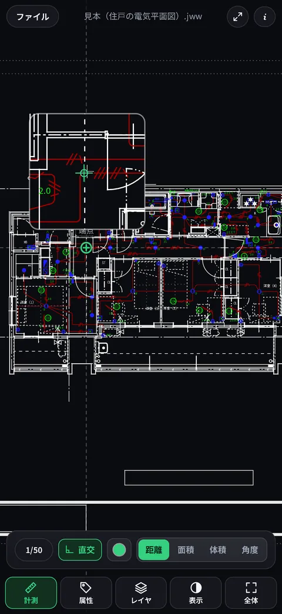
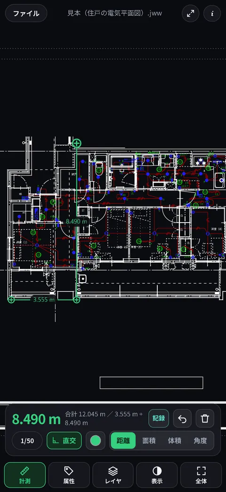
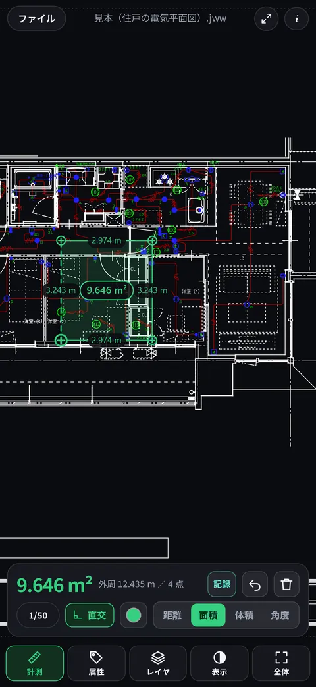
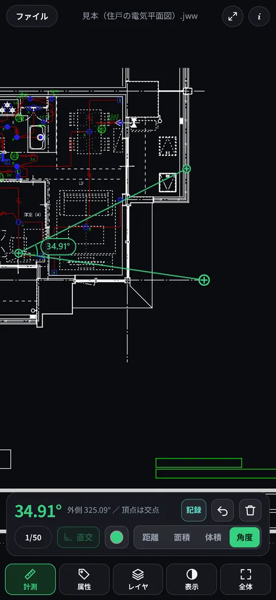
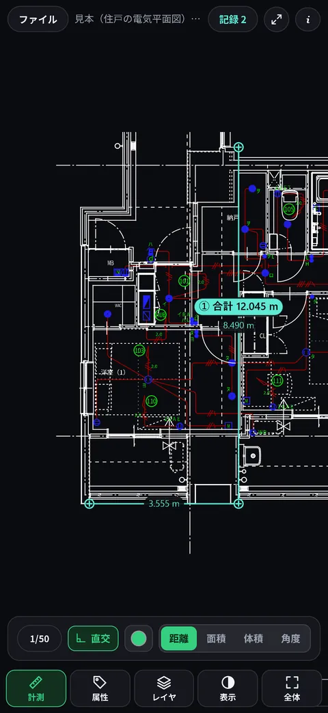
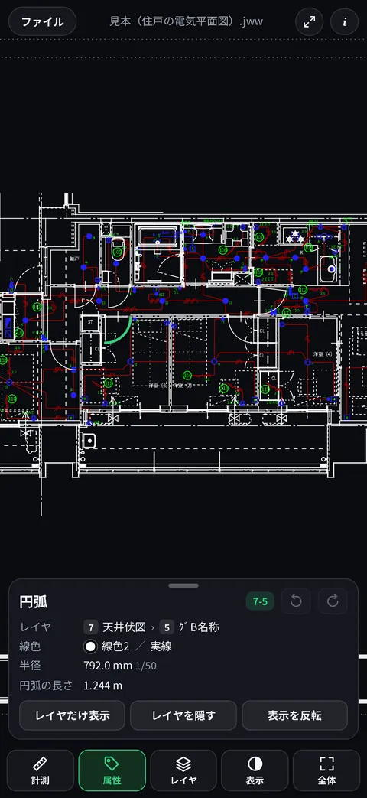
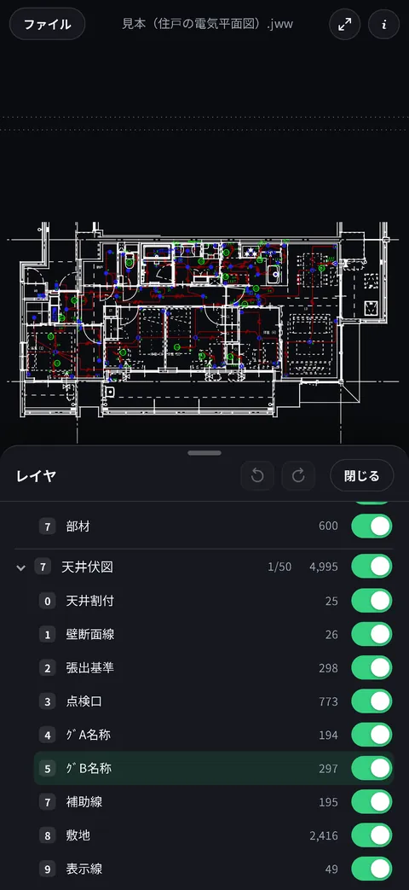
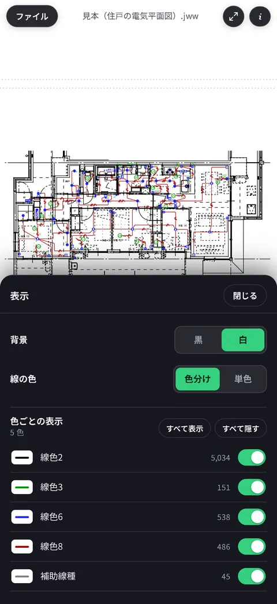
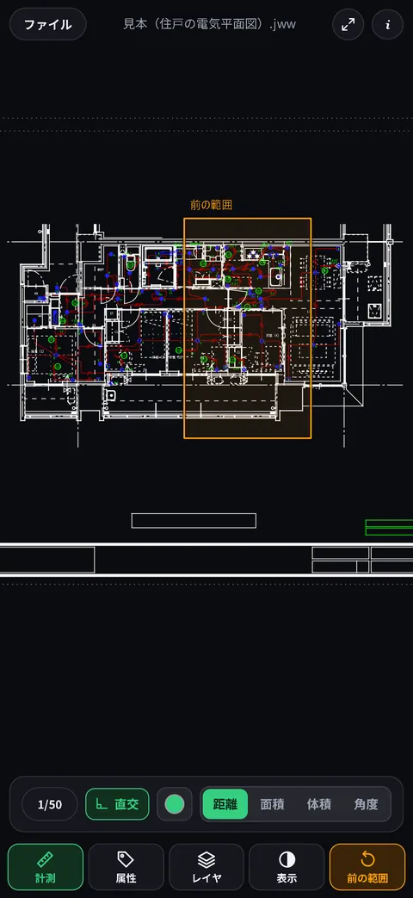
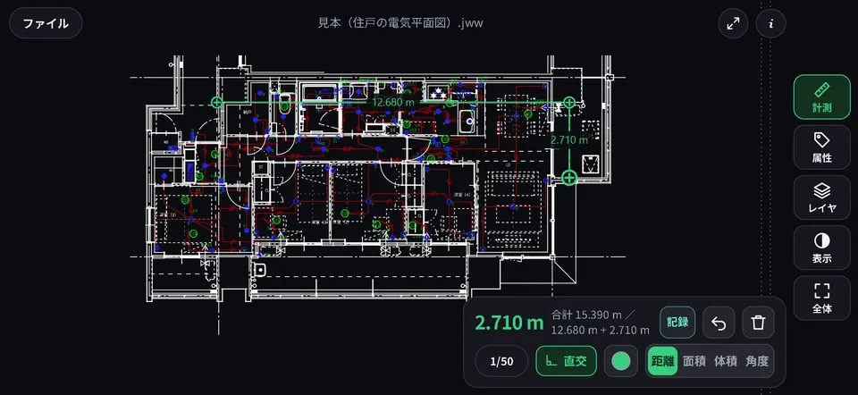

できること
- 図面を開く「ファイル」アプリ、メールや LINE、ZIP からも
- 実寸で測る距離・面積・体積・角度
- 拡大鏡で吸着長押しで端点・交点にぴたり
- 計測の記録①②…と残して一覧・コピー
- 属性タップでレイヤ・線色・長さ
- レイヤグループ・レイヤごとに表示を切り替え
- 表示白背景・単色・線色ごと
- 全体と前の範囲全体を見て、元の場所へ戻る
- 横向き・ボタンを隠す図面を大きく見る
- 電波がなくても地下や現場でもそのまま使える
図面を開く
- アプリの中から開く最初の画面の 図面を開く、または左上の ファイル を押して、.jww を選びます。前に開いた図面（10 件まで）も一覧から開き直せます。
- 「ファイル」アプリから「ファイル」アプリで .jww を押すだけで、ミテハカールが開きます。
- メール・LINE などから届いた図面を長押し（または共有ボタン）して、共有メニューから「ミテハカール」を選びます。
- ZIP で届いたときLINE などは .jww を ZIP にして届けることがあります。ZIP のまま開けます。中に図面がいくつもあれば、一覧から選べます。
基本の操作
指の動かし方は 3 つだけ。写真アプリや地図と同じ感覚です。
拡大鏡でぴったり指す
長押しすると、指の上に拡大鏡が出ます。拡大鏡の中心が指の位置で、緑の印が吸着する先（端点・交点・中点・円の中心・線の上）です。
そのまま指をずらして、ねらいの点に合ったら指を離すと、そこに点が置かれます。指に隠れる細かい所も正確に指せます。
軽くタップしたときも、近くの端点や交点に吸着します。

測る
下の 計測 を選んで、図面の上をタップすると点が置かれます。測るものは 距離面積体積角度 で切り替えます。縮尺は図面の設定から自動で読むので、表示されるのは実寸です。
距離
点を 2 つ置くと、その間の長さが出ます。続けて点を置くと連続計測になり、合計と、区間ごとの内訳が出ます。
直交 が入っていると（最初から入っています）、直前の点から真横か真下にだけ伸び、その線が壁や芯と交わる所に吸着します。「この面から真横に、あの壁まで」がそのまま測れます。斜めに測るときは直交を切ります。
色の丸ボタンで、計測の印・線・数字の色を 8 色から選べます。



面積
囲みたい範囲の角を順にタップします。3 点目から囲みが閉じて中が薄く塗られ、面積・外周・各辺の長さが出ます。最初の点まで戻らなくてかまいません。
体積
体積 を押すと、高さ（実寸 mm）を聞かれます。囲んだ面積に、その高さを掛けた値が出ます。高さを変えるときは、選んである 体積 をもう一度押します。
角度
一方の辺の上の点 → 角の頂点 → もう一方の辺の上の点、の順にタップします。頂点の角（0〜180°）と、外側の角が出ます。
置いた点を動かす
置いた点は、あとから直せます。点の上から指をずらすか、点の上を長押ししてから離すと、その点をつかめます。拡大鏡を見ながら置き直してください。軽く押しただけのときは、点は動かさずに新しい点を足します。
最後の点を取り消すときは戻すボタン ↶、点を全部消すときは消去ボタン（ごみ箱の絵）を押します。
計測の記録
- 測った値の横の 記録 を押すと、①②…と番号を付けて残し、次を測れるようになります（50 件まで）。
- 上のバーの 記録 N で一覧が出ます。まとめてコピーして、メモやメッセージに貼れます。
- 一覧の行や、図面の上の番号の札を押すと、その寸法の所へ図面が動いて見せてくれます。

図面を見やすくする
属性
属性 を選んで図形をタップすると、その図形が緑で目立ち、レイヤ・線色・線種・長さ（実寸）、文字や寸法値、部品の名前が分かります。
パネルの「レイヤだけ表示」「レイヤを隠す」「表示を反転」で、その図形のレイヤだけを見たり隠したりできます。丸矢印で 1 つずつ戻せます。

レイヤ
レイヤ で、レイヤグループとレイヤが並びます（番号は Jw_cad と同じ 0〜F）。右のスイッチで、グループごと・レイヤごとに隠せます。
開いたときは、Jw_cad で保存したときと同じ表示です。「反転」「Jw_cad の状態」「すべて表示」もあります。隠したレイヤには吸着しません。

表示
表示 で、背景を黒・白で切り替えられます。白背景では、白い線は黒く、黄色や水色は読める濃さで描きます。
「単色」にすると紙に印刷したような見え方に。線色ごとに表示・非表示も切り替えられます。

全体と前の範囲
全体 で図面全体を表示します。押す前に見ていた所は橙の枠で囲まれ、ボタンが 前の範囲 に変わります。もう一度押すと、元の位置と倍率にそのまま戻ります。
大きく動かしたり拡大・縮小したりすると、ボタンは「全体」に戻ります。

横向き・ボタンを隠す
iPhone を横にすると、ボタンが縦に並んで端に寄り、図面を上から下まで広く使えます。上のバーの ⤢ を押すと、ボタンやパネルを隠して図面を画面いっぱいに見られます（右上の ⤡ で戻ります）。

よくある質問
図面が開けません
- 開けるのは Jw_cad で保存した .jww です（Ver.2.30〜7.x の形式）。.jwc・.dxf・.pdf などには対応していません。
- ZIP は、中に .jww が入っていればそのまま開けます。パスワード付きの ZIP は開けません。パソコンなどで展開してから、.jww を送ってもらってください。
- メールやチャットでは、共有メニューから「ミテハカール」を選んでください。一覧に見えないときは、共有メニューの右端の「その他」から探せます。
- 壊れた図面や大きすぎる図面は、途中で止めて理由をお知らせします。
最近開いた図面を一覧から消したい
ファイル を押して出る一覧で、図面の右の × を押します。一覧から外れ、端末に取っておいた図面も消えます。
間違えて押したときは、一覧を閉じるまでは「元に戻す」で戻せます。
計測の記録はいつ消えますか
記録は、図面を開いているあいだだけのものです。別の図面を開いたとき（開く前に確かめます）と、アプリを閉じたときに消えます。端末には残しません。
残したいときは、記録 N の一覧のコピーで、メモやメッセージに貼っておいてください。
測った長さが Jw_cad と違います
計測に使う縮尺は、ふだんは「自動」です。区間ごとに、両端の点が乗った図形のレイヤグループの縮尺を使います。縮尺の違う図が並んだ図面では、何もない所に置いた点などで、思った縮尺にならないことがあります。
計測パネルの左下の 1/○○ を押して、測りたい図のレイヤグループを選ぶと、すべての区間をその縮尺で測ります（「自動」で元に戻ります）。
直交が入っていると真横・真下にしか測れません。斜めに測るときは直交を切ってください。
電波が入らない所でも使えますか
はい。iPhone のアプリは、図面の表示と計測にインターネットを使いません。地下や機内モードでもそのまま使えます。
Web 版は、Safari で開いてから共有ボタンの「ホーム画面に追加」をし、電波のある所で一度アイコンから開いておけば、電波がなくても起動します。
図面はどこかへ送られますか
いいえ。図面はすべて端末の中で読み込み・表示・計測し、開発者やほかの会社へ送ることはありません。利用状況の収集や広告もありません。
くわしくは プライバシーポリシー をご覧ください。
動作環境
| iPhone | iOS 16.4 以降をおすすめします（ZIP で届いた図面を開くのに必要です）。 |
|---|---|
| Web 版 | iPhone の Safari で https://takejiyuuri.github.io/jww-viewer/ を開いても使えます。 |
| 図面 | Jw_cad の .jww（Ver.2.30〜7.x の形式）。ZIP に入ったものも開けます。 |
お問い合わせ
不具合やご要望は、こちらからお知らせください。うまくいかないときは、iPhone の機種と iOS のバージョン、どの操作で困ったかを書いていただけると助かります。
Google フォームが開きます。返信はご入力のメールアドレスにお送りします。
お客様の図面をお送りいただく必要はありません。画面の写しを添えていただく場合は、図面の中身が写らないようご注意ください。